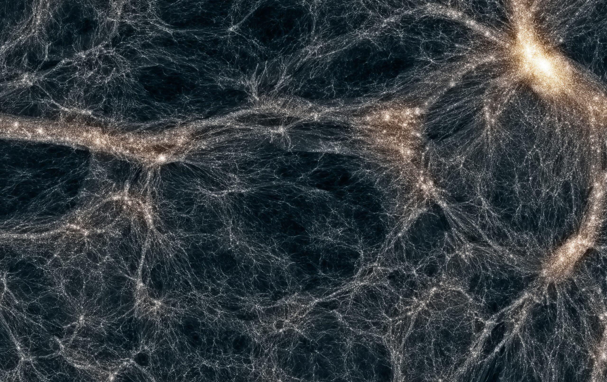

What Are Dark Matter and Dark Energy?
When we look up at the night sky, we see stars, planets, and glowing galaxies. But everything we can observe makes up only a small fraction of the universe. The rest is something we cannot see, touch, or directly detect.
Scientists call these hidden components dark matter and dark energy. Together, they make up about 95% of the entire universe, yet their true nature remains one of the biggest mysteries in science.
What is dark matter?
Dark matter is a mysterious substance that does not emit, absorb, or reflect light. This means it is completely invisible to telescopes.
Even though we cannot see it, we know it exists because of its gravitational effects. Galaxies rotate in a way that suggests there is much more mass present than what we can observe.
Without dark matter, galaxies would not have enough gravity to stay intact. Stars would fly apart as they spin, and the structure of the universe would look completely different.
How do we know dark matter exists?
One of the strongest pieces of evidence comes from galaxy rotation curves. Stars on the outer edges of galaxies move much faster than expected based on visible matter alone.
Another clue comes from gravitational lensing. Light from distant objects bends when it passes through massive regions of space, revealing invisible mass influencing its path.
These observations strongly suggest that something unseen is adding extra gravity throughout the universe.

This illustration shows how dark matter surrounds galaxies in a large halo, extending far beyond the visible stars.
What could dark matter be made of?
Scientists are still trying to identify what dark matter actually is. It does not seem to be made of normal atoms like everything we see around us.
Some theories suggest it could be made of unknown particles that interact very weakly with normal matter. Others propose exotic particles that have yet to be discovered in experiments.
What is dark energy?
While dark matter pulls things together, dark energy does the opposite. It is a mysterious force that causes the universe to expand faster and faster over time.
In 1929, Edwin Hubble discovered that the universe is expanding. Later observations showed that this expansion is not slowing down—it is accelerating.
This acceleration suggests the presence of a repulsive energy spread throughout space itself.
How does dark energy work?
Unlike matter, dark energy does not clump together. Instead, it appears to be evenly distributed across all of space.
As the universe expands, more space is created, and with it, more dark energy appears. This causes the expansion to speed up over time.
The fate of the universe
If dark energy continues to dominate, the universe may keep expanding forever. Galaxies will move farther apart until distant regions become completely unreachable.
Over extremely long timescales, stars will burn out, galaxies will fade, and the universe may become cold and dark.
This possible future is sometimes called the "Big Freeze."
Could dark matter and dark energy be connected?
Some theories suggest that dark matter and dark energy might be related in ways we do not yet understand. They could be different aspects of a deeper physical reality.
However, current evidence shows they behave very differently, so most models treat them as separate phenomena.
Why can't we see them directly?
Our eyes and telescopes rely on light. Anything that does not interact with light is essentially invisible to us.
Dark matter does not emit or reflect light, and dark energy is not a substance in the traditional sense. Instead, it is a property of space itself.
This is why scientists rely on indirect evidence such as gravity and cosmic expansion.
How do scientists study them?
Researchers use powerful telescopes, simulations, and particle detectors to search for clues.
Experiments deep underground and in space are designed to catch rare interactions that might reveal dark matter particles.
Meanwhile, observatories studying distant supernovae and galaxies help measure how fast the universe is expanding.
The biggest mystery in modern physics
Dark matter and dark energy remain two of the most important unsolved problems in science.
Together, they shape the structure, evolution, and fate of the entire cosmos, yet we still do not know what they truly are.
Why this matters
Understanding dark matter and dark energy could lead to breakthroughs in physics, technology, and our understanding of reality itself.
Every discovery brings us closer to answering one of humanity’s deepest questions: what is the universe really made of?